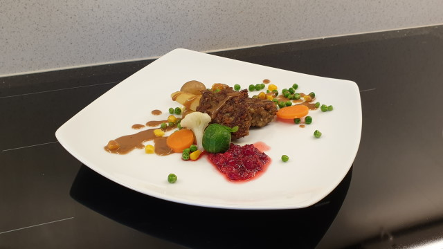

Elizabeths Karbonader
Elizabeths karbonadeoppskrift
Ingredients
- 250g karbonadedeig
- 50 ml fløte
- 25 g ost
- 1 ts potetmel
- 1 ts vann
- 1 egg
- 1 liten løk
- 2 kavringer
- 1 ts salt
- 1 ts pepper
- 1 fedd hvitløk
- 1 ts basilikum
- 1 krm bakepulver
- persille
- allehånde
Directions
- Rør potetmelet ut i vann.
- Bland alle ingrediensene i en stor bolle til du har en jevn deig.
- Form små til mellomstore kaker av deigen.
- Stek kakene på middels til høy varme
Notes
Opptil halvparten av kavringen kan erstattes med havregryn.
Om deigen faller fra hverandre når du former kakene, kan du legge til mer egg eller potetmel.
Test med én karbonade før du steker alle, slik at deigen kan smakes til med mer krydder ved behov.
Karbonadene kan holdes varme i en form i ovnen etter steking.